Lossless Decoding on MI250
Where speculative decoding methods fall short on 2026 dense, MoE and hybrid models, measured on 4× AMD MI250 (8 GCDs, gfx90a) with vLLM 0.30. September 25–30, 2026.
Summary
- Native MTP is the most robust method. It keeps a speedup at every setting except long context and very high concurrency. DFlash beats it only at low concurrency, and only on some models.
- Verification is the bottleneck on MI250. Checking 2–16 tokens costs a fixed ~1.6–2× a decoding step on dense models, and up to 3.5× on the Qwen MoE. Only drafters that get about 3 or more tokens accepted per step come out ahead.
- Speedups shrink under realistic conditions: many concurrent requests, temperature 1, long context, and MoE targets. Acceptance barely changes with concurrency; the loss comes entirely from verify cost.
- The optimal draft length depends on load. Long drafts win with few requests in flight and lose with many. No method adapts to this.
- “Lossless” holds only up to floating-point effects. Outputs diverge from plain decoding on 37–65% of prompts, but task accuracy is unchanged. Batch-invariant kernels remove the divergence entirely, at the cost of the whole speedup on MI250. vLLM’s n-gram method produces genuinely wrong output on the hybrid Qwen3.8.
Setup
- Hardware: 4× MI250 = 8 GCDs × 64 GB, gfx90a (no FP8). Each 27–35B model runs in BF16 split across 2 GCDs (tensor parallel), so 4 runs go in parallel. Running 4 at once changes speed by only 1.2%.
- Engine: vLLM 0.30.0 (ROCm 7.2) in Docker, plus 4 patches (see vLLM issues).
- Models: Qwen3.8-27B (dense, 48 Gated-DeltaNet + 16 attention layers), Gemma 4 31B (dense), Qwen3.6-35B-A3B (MoE, hybrid), Gemma 4 26B-A4B (MoE). On all 8 GCDs: Qwen3.8-Flash-Next (125B total, 6B active, 512 experts) and Mistral Small 4 (119B, converted from FP8 to BF16).
- Methods: native MTP, DFlash/DFlash2, suffix decoding, n-gram, Medusa (heads trained here), EAGLE (Mistral). Simulated offline from saved plain-decoding outputs (validated to within 1.5% of real runs): prompt lookup, SAM-style longest match, draft model, layer skip.
- Workloads: Spec-Bench (480 prompts, 6 categories, up to 1024 output tokens, thinking off); AIME-2025 + MATH500 L5 with thinking on (up to 12k tokens); LongBench-v2 truncated to 8k / 32k / 64k tokens; GSM8K for accuracy.
- Speedup = tokens/s ÷ plain-decoding tokens/s in the same engine and setup. τ = tokens produced per target forward pass.
Speed with one request at a time
Fig. 1 Speedup vs plain decoding (Spec-Bench, T=0)
MTP and DFlash reach about 1.9–2.1× on the dense models; the Qwen MoE gets much less. Suffix, n-gram and Medusa are at or below plain decoding.
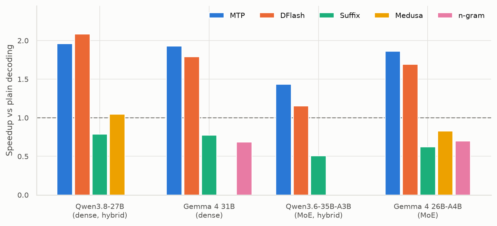
Data
| model | method | speedup | tau | tok s | ar tok s |
|---|---|---|---|---|---|
| Qwen3.8-27B | MTP | 1.96 | 3.10 | 61.30 | 31.30 |
| Qwen3.8-27B | DFlash | 2.09 | 4.15 | 65.30 | 31.30 |
| Qwen3.8-27B | Suffix | 0.79 | 1.51 | 24.60 | 31.30 |
| Qwen3.8-27B | Medusa | 1.05 | 1.92 | 32.80 | 31.30 |
| Gemma 4 31B | MTP | 1.93 | 3.41 | 59.00 | 30.60 |
| Gemma 4 31B | DFlash | 1.79 | 3.40 | 54.90 | 30.60 |
| Gemma 4 31B | Suffix | 0.77 | 1.41 | 23.70 | 30.60 |
| Gemma 4 31B | n-gram | 0.68 | 2.20 | 20.90 | 30.60 |
| Qwen3.6-35B-A3B | MTP | 1.43 | 3.06 | 111.70 | 78.00 |
| Qwen3.6-35B-A3B | DFlash | 1.15 | 3.67 | 89.80 | 78.00 |
| Qwen3.6-35B-A3B | Suffix | 0.51 | 1.47 | 39.50 | 78.00 |
| Gemma 4 26B-A4B | MTP | 1.86 | 3.31 | 150.20 | 80.70 |
| Gemma 4 26B-A4B | DFlash | 1.69 | 2.92 | 136.50 | 80.70 |
| Gemma 4 26B-A4B | Suffix | 0.62 | 1.42 | 50.10 | 80.70 |
| Gemma 4 26B-A4B | Medusa | 0.83 | 1.48 | 66.70 | 80.70 |
| Gemma 4 26B-A4B | n-gram | 0.70 | 2.22 | 56.20 | 80.70 |
Fig. 2 Speedup by task category
Math is always the easiest category. Summarization and QA are the hardest for trained drafters. Suffix loses in every cell.
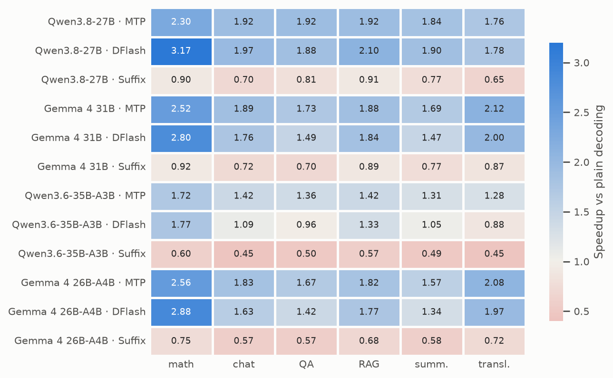
Data
| row | math | chat | QA | RAG | summ. | transl. |
|---|---|---|---|---|---|---|
| Qwen3.8-27B · MTP | 2.30 | 1.92 | 1.92 | 1.92 | 1.84 | 1.76 |
| Qwen3.8-27B · DFlash | 3.17 | 1.97 | 1.88 | 2.10 | 1.90 | 1.78 |
| Qwen3.8-27B · Suffix | 0.90 | 0.70 | 0.81 | 0.91 | 0.77 | 0.65 |
| Gemma 4 31B · MTP | 2.52 | 1.89 | 1.73 | 1.88 | 1.69 | 2.12 |
| Gemma 4 31B · DFlash | 2.80 | 1.76 | 1.49 | 1.84 | 1.47 | 2.00 |
| Gemma 4 31B · Suffix | 0.92 | 0.72 | 0.70 | 0.89 | 0.77 | 0.87 |
| Qwen3.6-35B-A3B · MTP | 1.72 | 1.42 | 1.36 | 1.42 | 1.31 | 1.28 |
| Qwen3.6-35B-A3B · DFlash | 1.77 | 1.09 | 0.96 | 1.33 | 1.05 | 0.88 |
| Qwen3.6-35B-A3B · Suffix | 0.60 | 0.45 | 0.50 | 0.57 | 0.49 | 0.45 |
| Gemma 4 26B-A4B · MTP | 2.56 | 1.83 | 1.67 | 1.82 | 1.57 | 2.08 |
| Gemma 4 26B-A4B · DFlash | 2.88 | 1.63 | 1.42 | 1.77 | 1.34 | 1.97 |
| Gemma 4 26B-A4B · Suffix | 0.75 | 0.57 | 0.57 | 0.68 | 0.58 | 0.72 |
Fig. 3 Speedup vs draft length k
Gains flatten at k≈3–7. k=1 is never a good choice. On Gemma MoE, DFlash gets worse past k=7.
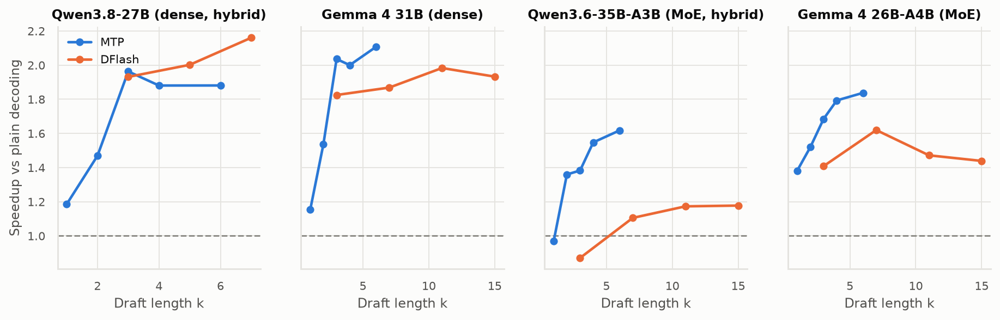
Data
| model | method | k | speedup | tau | step cost |
|---|---|---|---|---|---|
| Qwen3.8-27B | MTP | 1 | 1.19 | 1.89 | 1.60 |
| Qwen3.8-27B | MTP | 2 | 1.47 | 2.62 | 1.79 |
| Qwen3.8-27B | MTP | 3 | 1.96 | 3.17 | 1.62 |
| Qwen3.8-27B | MTP | 4 | 1.88 | 3.60 | 1.91 |
| Qwen3.8-27B | MTP | 6 | 1.88 | 4.11 | 2.19 |
| Qwen3.8-27B | DFlash | 3 | 1.93 | 3.14 | 1.63 |
| Qwen3.8-27B | DFlash | 5 | 2.00 | 3.95 | 1.97 |
| Qwen3.8-27B | DFlash | 7 | 2.16 | 4.35 | 2.02 |
| Gemma 4 31B | MTP | 1 | 1.15 | 1.85 | 1.60 |
| Gemma 4 31B | MTP | 2 | 1.54 | 2.53 | 1.64 |
| Gemma 4 31B | MTP | 3 | 2.04 | 3.06 | 1.50 |
| Gemma 4 31B | MTP | 4 | 2.00 | 3.47 | 1.73 |
| Gemma 4 31B | MTP | 6 | 2.11 | 3.99 | 1.89 |
| Gemma 4 31B | DFlash | 3 | 1.82 | 2.81 | 1.54 |
| Gemma 4 31B | DFlash | 7 | 1.87 | 3.51 | 1.88 |
| Gemma 4 31B | DFlash | 11 | 1.98 | 3.66 | 1.85 |
| Gemma 4 31B | DFlash | 15 | 1.93 | 3.69 | 1.91 |
| Qwen3.6-35B-A3B | MTP | 1 | 0.97 | 1.88 | 1.94 |
| Qwen3.6-35B-A3B | MTP | 2 | 1.36 | 2.57 | 1.89 |
| Qwen3.6-35B-A3B | MTP | 3 | 1.38 | 3.10 | 2.24 |
| Qwen3.6-35B-A3B | MTP | 4 | 1.55 | 3.49 | 2.26 |
| Qwen3.6-35B-A3B | MTP | 6 | 1.62 | 4.01 | 2.48 |
| Qwen3.6-35B-A3B | DFlash | 3 | 0.87 | 2.91 | 3.34 |
| Qwen3.6-35B-A3B | DFlash | 7 | 1.11 | 3.85 | 3.48 |
| Qwen3.6-35B-A3B | DFlash | 11 | 1.17 | 4.04 | 3.45 |
| Qwen3.6-35B-A3B | DFlash | 15 | 1.18 | 4.08 | 3.47 |
| Gemma 4 26B-A4B | MTP | 1 | 1.38 | 1.83 | 1.32 |
| Gemma 4 26B-A4B | MTP | 2 | 1.52 | 2.49 | 1.64 |
| Gemma 4 26B-A4B | MTP | 3 | 1.68 | 2.99 | 1.77 |
| Gemma 4 26B-A4B | MTP | 4 | 1.79 | 3.36 | 1.87 |
| Gemma 4 26B-A4B | MTP | 6 | 1.84 | 3.82 | 2.08 |
| Gemma 4 26B-A4B | DFlash | 3 | 1.41 | 2.53 | 1.80 |
| Gemma 4 26B-A4B | DFlash | 7 | 1.62 | 3.00 | 1.85 |
| Gemma 4 26B-A4B | DFlash | 11 | 1.47 | 3.09 | 2.10 |
| Gemma 4 26B-A4B | DFlash | 15 | 1.44 | 3.11 | 2.16 |
Serving under load
Fig. 4 Speedup vs concurrent requests (continuous arrivals)
Most configurations fall below plain decoding by 64–128 requests in flight. Gemma 4 26B-A4B with MTP is the only one that holds (1.60× at 128).
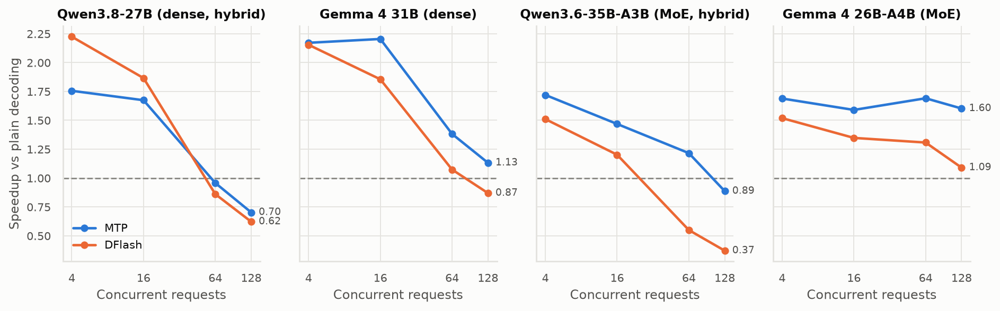
Data
| config | 4 | 16 | 64 | 128 |
|---|---|---|---|---|
| Qwen3.8-27B · MTP | 1.76 | 1.67 | 0.96 | 0.70 |
| Qwen3.8-27B · DFlash | 2.22 | 1.87 | 0.86 | 0.62 |
| Gemma 4 31B · MTP | 2.17 | 2.20 | 1.38 | 1.13 |
| Gemma 4 31B · DFlash | 2.15 | 1.86 | 1.07 | 0.87 |
| Qwen3.6-35B-A3B · MTP | 1.72 | 1.47 | 1.22 | 0.89 |
| Qwen3.6-35B-A3B · DFlash | 1.51 | 1.20 | 0.55 | 0.37 |
| Gemma 4 26B-A4B · MTP | 1.69 | 1.59 | 1.69 | 1.60 |
| Gemma 4 26B-A4B · DFlash | 1.52 | 1.35 | 1.31 | 1.09 |
Fig. 5 Draft length × concurrency
Longer drafts win with 4 requests in flight and lose with 64+. The best k depends on load.
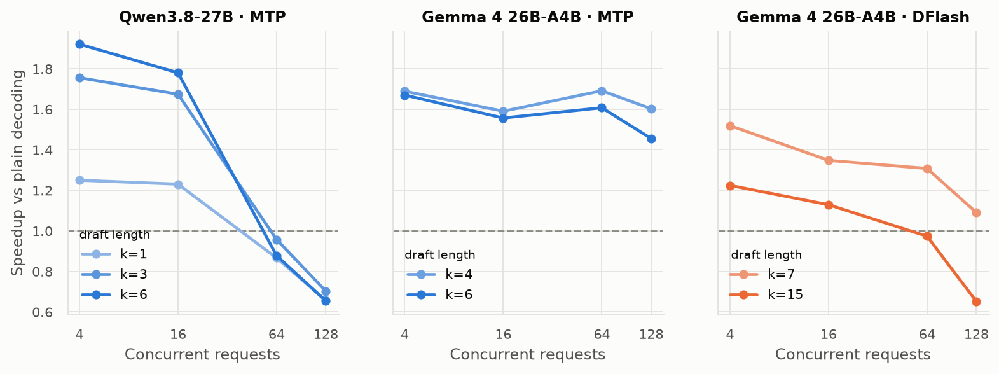
Data
Raw results: results/d/.
Fig. 6 Temperature 0 vs 1 (3 seeds at T=1)
Sampling cuts acceptance. Qwen drafters lose the most, and DFlash on the Qwen MoE drops below plain decoding.
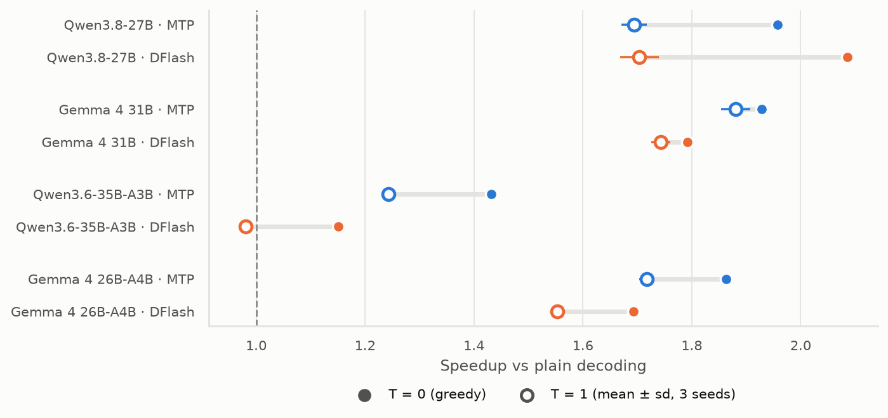
Data
| model | method | T0 | T1 mean | T1 std | seeds |
|---|---|---|---|---|---|
| Qwen3.8-27B | MTP | 1.96 | 1.69 | 0.02 | 3 |
| Qwen3.8-27B | DFlash | 2.09 | 1.70 | 0.04 | 3 |
| Gemma 4 31B | MTP | 1.93 | 1.88 | 0.03 | 3 |
| Gemma 4 31B | DFlash | 1.79 | 1.74 | 0.02 | 3 |
| Qwen3.6-35B-A3B | MTP | 1.43 | 1.24 | 0.01 | 3 |
| Qwen3.6-35B-A3B | DFlash | 1.15 | 0.98 | 0.01 | 3 |
| Gemma 4 26B-A4B | MTP | 1.86 | 1.72 | 0.01 | 3 |
| Gemma 4 26B-A4B | DFlash | 1.69 | 1.55 | 0.01 | 3 |
Why: verify cost on MI250
Fig. 7 Matrix-multiply time vs tokens per forward pass (one Qwen3-8B layer)
Stock vLLM is up to 8× slower at 3 and 5 tokens (a skinny-kernel misroute; we patched it). Even patched, verifying 3–16 tokens costs ~1.6–1.7× a 1-token step.
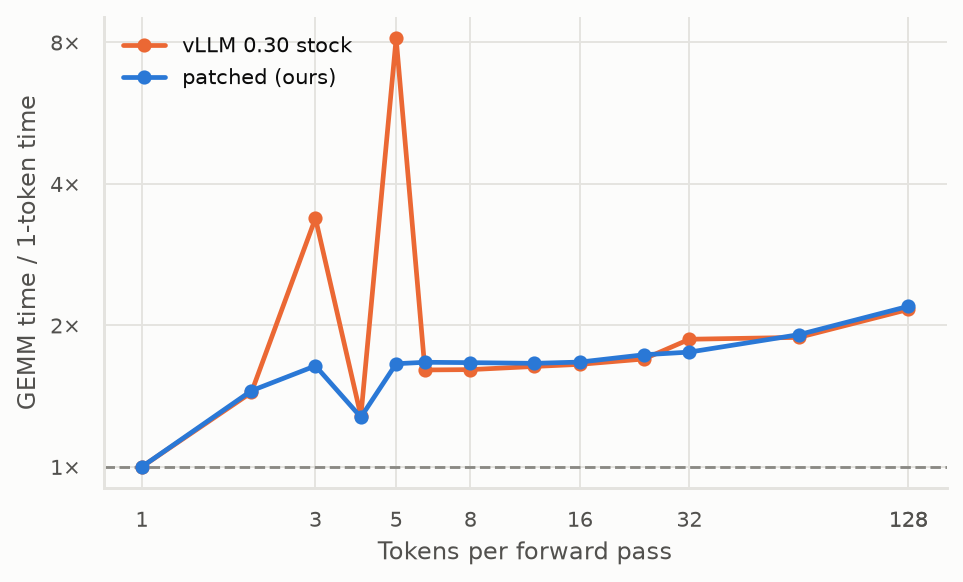
Data
From scripts/gemm_latency.py on gfx90a.
Fig. 8 Step time vs tokens verified (measured end to end)
Dense models pay ~1.5–2.2× per step. On the Qwen MoE, DFlash steps cost ~3.4× because its drafter and the extra experts add up.
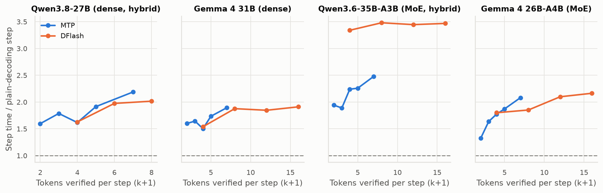
Data
| model | method | k | step cost |
|---|---|---|---|
| Qwen3.8-27B | MTP | 1 | 1.60 |
| Qwen3.8-27B | MTP | 2 | 1.79 |
| Qwen3.8-27B | MTP | 3 | 1.62 |
| Qwen3.8-27B | MTP | 4 | 1.91 |
| Qwen3.8-27B | MTP | 6 | 2.19 |
| Qwen3.8-27B | DFlash | 3 | 1.63 |
| Qwen3.8-27B | DFlash | 5 | 1.97 |
| Qwen3.8-27B | DFlash | 7 | 2.02 |
| Gemma 4 31B | MTP | 1 | 1.60 |
| Gemma 4 31B | MTP | 2 | 1.64 |
| Gemma 4 31B | MTP | 3 | 1.50 |
| Gemma 4 31B | MTP | 4 | 1.73 |
| Gemma 4 31B | MTP | 6 | 1.89 |
| Gemma 4 31B | DFlash | 3 | 1.54 |
| Gemma 4 31B | DFlash | 7 | 1.88 |
| Gemma 4 31B | DFlash | 11 | 1.85 |
| Gemma 4 31B | DFlash | 15 | 1.91 |
| Qwen3.6-35B-A3B | MTP | 1 | 1.94 |
| Qwen3.6-35B-A3B | MTP | 2 | 1.89 |
| Qwen3.6-35B-A3B | MTP | 3 | 2.24 |
| Qwen3.6-35B-A3B | MTP | 4 | 2.26 |
| Qwen3.6-35B-A3B | MTP | 6 | 2.48 |
| Qwen3.6-35B-A3B | DFlash | 3 | 3.34 |
| Qwen3.6-35B-A3B | DFlash | 7 | 3.48 |
| Qwen3.6-35B-A3B | DFlash | 11 | 3.45 |
| Qwen3.6-35B-A3B | DFlash | 15 | 3.47 |
| Gemma 4 26B-A4B | MTP | 1 | 1.32 |
| Gemma 4 26B-A4B | MTP | 2 | 1.64 |
| Gemma 4 26B-A4B | MTP | 3 | 1.77 |
| Gemma 4 26B-A4B | MTP | 4 | 1.87 |
| Gemma 4 26B-A4B | MTP | 6 | 2.08 |
| Gemma 4 26B-A4B | DFlash | 3 | 1.80 |
| Gemma 4 26B-A4B | DFlash | 7 | 1.85 |
| Gemma 4 26B-A4B | DFlash | 11 | 2.10 |
| Gemma 4 26B-A4B | DFlash | 15 | 2.16 |
Fig. 9 MoE: distinct experts touched vs tokens verified
Verifying 16 tokens touches 6.7× the experts of one token on the 256-expert Qwen MoE and 5.0× on the 128-expert Gemma MoE. That explains the larger Qwen MoE penalty.
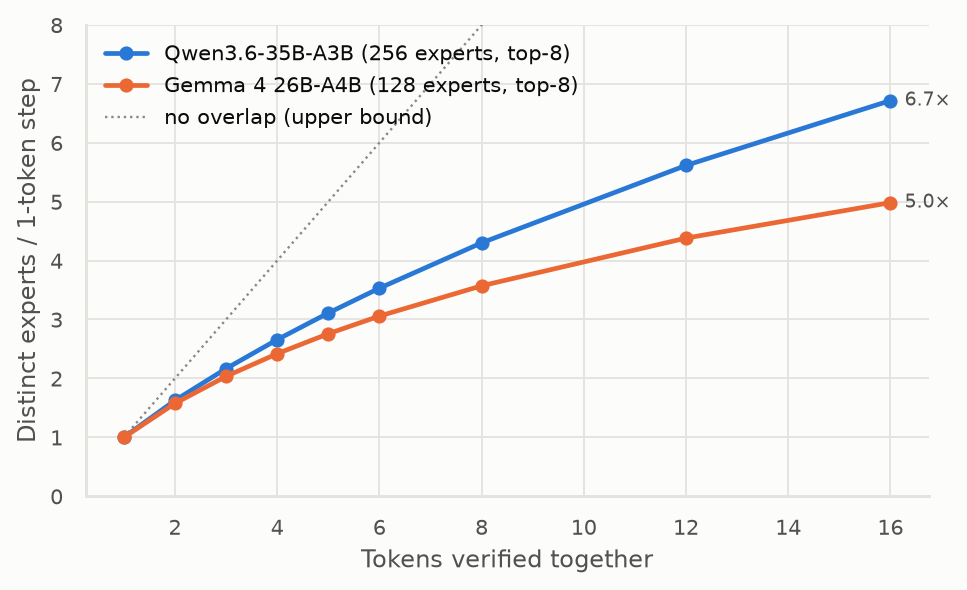
Data
| model | window | experts vs 1token |
|---|---|---|
| Qwen3.6-35B-A3B | 1 | 1.00 |
| Qwen3.6-35B-A3B | 2 | 1.63 |
| Qwen3.6-35B-A3B | 3 | 2.17 |
| Qwen3.6-35B-A3B | 4 | 2.66 |
| Qwen3.6-35B-A3B | 5 | 3.11 |
| Qwen3.6-35B-A3B | 6 | 3.53 |
| Qwen3.6-35B-A3B | 8 | 4.30 |
| Qwen3.6-35B-A3B | 12 | 5.62 |
| Qwen3.6-35B-A3B | 16 | 6.72 |
| Gemma 4 26B-A4B | 1 | 1.00 |
| Gemma 4 26B-A4B | 2 | 1.58 |
| Gemma 4 26B-A4B | 3 | 2.03 |
| Gemma 4 26B-A4B | 4 | 2.42 |
| Gemma 4 26B-A4B | 5 | 2.76 |
| Gemma 4 26B-A4B | 6 | 3.06 |
| Gemma 4 26B-A4B | 8 | 3.57 |
| Gemma 4 26B-A4B | 12 | 4.38 |
| Gemma 4 26B-A4B | 16 | 4.98 |
Fig. 10 Tokens accepted per verify step, by drafter
Only DFlash, MTP and a separate draft model reach about 3 tokens per step. Retrieval drafters stay at 1.3–1.4, which is below break-even on MI250.
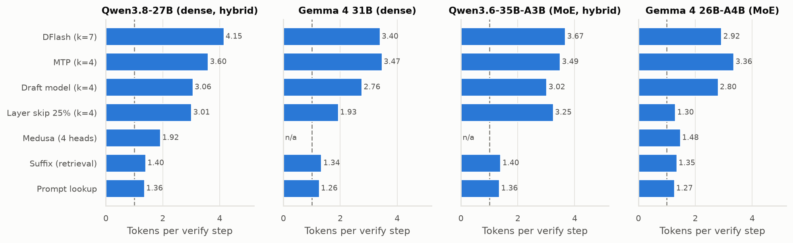
Data
| model | drafter | tokens per step |
|---|---|---|
| Qwen3.8-27B | DFlash (k=7) | 4.15 |
| Qwen3.8-27B | MTP (k=4) | 3.60 |
| Qwen3.8-27B | Draft model (k=4) | 3.06 |
| Qwen3.8-27B | Layer skip 25% (k=4) | 3.01 |
| Qwen3.8-27B | Medusa (4 heads) | 1.92 |
| Qwen3.8-27B | Suffix (retrieval) | 1.40 |
| Qwen3.8-27B | Prompt lookup | 1.36 |
| Gemma 4 31B | DFlash (k=7) | 3.40 |
| Gemma 4 31B | MTP (k=4) | 3.47 |
| Gemma 4 31B | Draft model (k=4) | 2.76 |
| Gemma 4 31B | Layer skip 25% (k=4) | 1.93 |
| Gemma 4 31B | Medusa (4 heads) | None |
| Gemma 4 31B | Suffix (retrieval) | 1.34 |
| Gemma 4 31B | Prompt lookup | 1.26 |
| Qwen3.6-35B-A3B | DFlash (k=7) | 3.67 |
| Qwen3.6-35B-A3B | MTP (k=4) | 3.49 |
| Qwen3.6-35B-A3B | Draft model (k=4) | 3.02 |
| Qwen3.6-35B-A3B | Layer skip 25% (k=4) | 3.25 |
| Qwen3.6-35B-A3B | Medusa (4 heads) | None |
| Qwen3.6-35B-A3B | Suffix (retrieval) | 1.40 |
| Qwen3.6-35B-A3B | Prompt lookup | 1.36 |
| Gemma 4 26B-A4B | DFlash (k=7) | 2.92 |
| Gemma 4 26B-A4B | MTP (k=4) | 3.36 |
| Gemma 4 26B-A4B | Draft model (k=4) | 2.80 |
| Gemma 4 26B-A4B | Layer skip 25% (k=4) | 1.30 |
| Gemma 4 26B-A4B | Medusa (4 heads) | 1.48 |
| Gemma 4 26B-A4B | Suffix (retrieval) | 1.35 |
| Gemma 4 26B-A4B | Prompt lookup | 1.27 |
Robustness
Fig. 11 Speedup vs prompt length (Triton attention)
Every method drops below plain decoding by 64k context on both models.
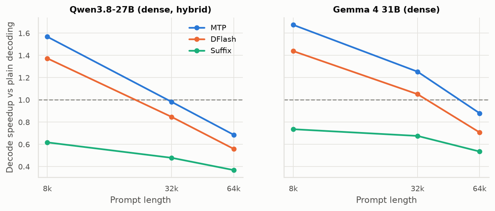
Data
| model | method | context k | speedup |
|---|---|---|---|
| Qwen3.8-27B | MTP | 8 | 1.57 |
| Qwen3.8-27B | MTP | 32 | 0.98 |
| Qwen3.8-27B | MTP | 64 | 0.69 |
| Qwen3.8-27B | DFlash | 8 | 1.37 |
| Qwen3.8-27B | DFlash | 32 | 0.85 |
| Qwen3.8-27B | DFlash | 64 | 0.56 |
| Qwen3.8-27B | Suffix | 8 | 0.62 |
| Qwen3.8-27B | Suffix | 32 | 0.48 |
| Qwen3.8-27B | Suffix | 64 | 0.37 |
| Gemma 4 31B | MTP | 8 | 1.67 |
| Gemma 4 31B | MTP | 32 | 1.25 |
| Gemma 4 31B | MTP | 64 | 0.88 |
| Gemma 4 31B | DFlash | 8 | 1.44 |
| Gemma 4 31B | DFlash | 32 | 1.05 |
| Gemma 4 31B | DFlash | 64 | 0.71 |
| Gemma 4 31B | Suffix | 8 | 0.74 |
| Gemma 4 31B | Suffix | 32 | 0.68 |
| Gemma 4 31B | Suffix | 64 | 0.54 |
DFlash is run with prefix caching off (see vLLM issues).
Fig. 12 Acceptance vs output position, long reasoning (thinking on)
No drift: acceptance stays flat across 10k+ tokens of reasoning on every model.
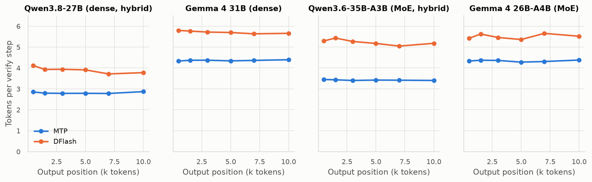
Data
Raw traces: results/e1/.
Large MoE on 8 GCDs
Plain decoding: Qwen3.8-Flash-Next 36.3 tok/s, Mistral Small 4 73.1 tok/s. Flash-Next with MTP reaches 2.21× (MTP k=4), better than the smaller Qwen MoE, because communication between cards dominates each step and hides the extra expert loads. Mistral's official EAGLE drafter is slower than plain decoding (0.66×).
| model | method | tok s | speedup | tau |
|---|---|---|---|---|
| Qwen3.8-Flash-Next (TP=8) | MTP k=1 | 62.10 | 1.71 | 1.86 |
| Qwen3.8-Flash-Next (TP=8) | MTP k=2 | 66.00 | 1.82 | 2.54 |
| Qwen3.8-Flash-Next (TP=8) | MTP k=3 | 68.60 | 1.89 | 3.04 |
| Qwen3.8-Flash-Next (TP=8) | MTP k=4 | 80.10 | 2.21 | 3.45 |
| Mistral Small 4 (TP=8) | EAGLE k=3 | 48.50 | 0.66 | 2.38 |
Losslessness
Fig. 13 Output divergence from plain decoding (T=0)
Plain decoding reproduces exactly on 3 of 4 models, yet every speculative method diverges on 37–65% of prompts, almost always at near-tied tokens. With batch-invariant kernels, divergence drops to 0%.
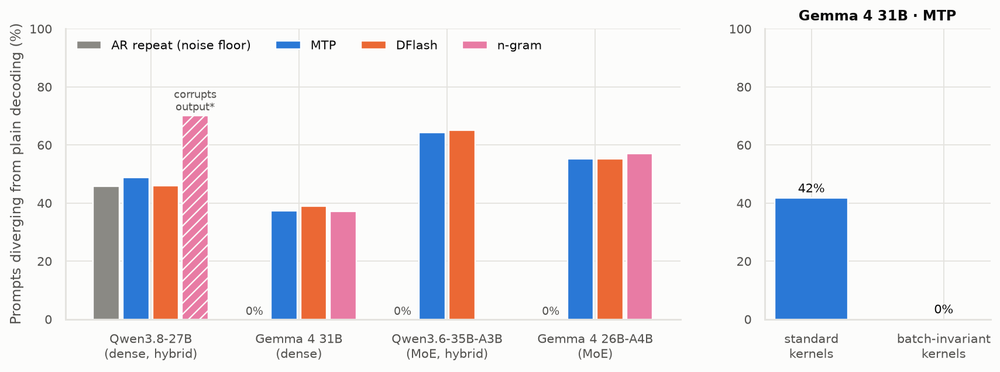
Data
| model | method | diverged pct | confident gt 1nat | prompts |
|---|---|---|---|---|
| Qwen3.8-27B | AR repeat | 45.80 | 0 | 480 |
| Qwen3.8-27B | MTP | 48.80 | 0 | 480 |
| Qwen3.8-27B | DFlash | 46.00 | 0 | 480 |
| Gemma 4 31B | AR repeat | 0.00 | 0 | 480 |
| Gemma 4 31B | MTP | 37.30 | 0 | 480 |
| Gemma 4 31B | DFlash | 39.00 | 1 | 480 |
| Gemma 4 31B | n-gram | 37.10 | 0 | 480 |
| Qwen3.6-35B-A3B | AR repeat | 0.00 | 0 | 480 |
| Qwen3.6-35B-A3B | MTP | 64.20 | 0 | 480 |
| Qwen3.6-35B-A3B | DFlash | 65.00 | 2 | 480 |
| Gemma 4 26B-A4B | AR repeat | 0.00 | 0 | 480 |
| Gemma 4 26B-A4B | MTP | 55.20 | 4 | 480 |
| Gemma 4 26B-A4B | DFlash | 55.20 | 4 | 480 |
| Gemma 4 26B-A4B | n-gram | 57.10 | 7 | 480 |
| Qwen3.8-27B | n-gram (pilot, 30 prompts) | 70.00 | 8 | 30 |
*Qwen3.8 n-gram: pilot run, 30 prompts. It changes confident tokens (gaps up to 14 nats) and repeats earlier text: recurrent state isn't rolled back after rejected drafts.
Cost of exact losslessness (Gemma 4 31B, MTP): with batch-invariant kernels, plain decoding falls from 30.4 to 12.0 tok/s, and MTP from 58.0 to 33.5 tok/s, about the speed of plain decoding with standard kernels.
Task accuracy at T=1 (GSM8K, 1,319 problems × 3 seeds): every speculative method is within ±0.5 points of plain decoding.
| model | method | gsm8k acc | sd |
|---|---|---|---|
| Qwen3.6-35B-A3B | ar | 95.60% | ±0.20 |
| Qwen3.6-35B-A3B | dflash7 | 95.38% | ±0.13 |
| Qwen3.6-35B-A3B | mtp3 | 95.17% | ±0.42 |
| Qwen3.8-27B | ar | 94.77% | ±0.26 |
| Qwen3.8-27B | dflash7 | 94.64% | ±0.22 |
| Qwen3.8-27B | mtp3 | 95.20% | ±0.19 |
| gemma-4-26B-A4B-it | ar | 96.31% | ±0.12 |
| gemma-4-26B-A4B-it | dflash7 | 96.61% | ±0.16 |
| gemma-4-26B-A4B-it | mtp4 | 96.49% | ±0.23 |
| gemma-4-31B-it | ar | 97.42% | ±0.20 |
| gemma-4-31B-it | dflash7 | 97.32% | ±0.16 |
| gemma-4-31B-it | mtp4 | 97.19% | ±0.20 |
Gap matrix
Speedup vs plain decoding (ranges across models) unless marked τ. “—” means not measured.
| Method | Setup cost | Batch size 1 | 128 in flight | Temperature 1 | 64k context | MoE penalty | Hybrid models |
|---|---|---|---|---|---|---|---|
| MTP (native) | ships with model | 1.43–1.96× | 0.70–1.60× | 1.24–1.88× | 0.69–0.88× | 1.43× vs 1.96× (Qwen) | ✓ |
| DFlash / DFlash2 | separate drafter | 1.15–2.09× | 0.37–1.09× | 0.98–1.74× | 0.56–0.71׆ | 1.15× vs 2.09× (Qwen) | ✓ |
| Draft model (SpS) | none (small model) | τ 2.76–3.06 (sim.) | — | — | — | — | vLLM crashes‡ |
| Layer skip (D&V/SWIFT) | skip-set search | τ 1.30–3.25 (sim.) | — | — | — | — | — |
| Medusa | train heads | 0.83–1.05× | — | — | — | 0.83× on MoE | ✓ |
| Suffix decoding | none | 0.51–0.79× | — | — | 0.37–0.54× | 0.51× on Qwen MoE | ✓ |
| n-gram / prompt lookup | none | 0.68–0.70× | — | — | — | — | ✗ corrupts output |
| EAGLE (Mistral Small 4) | separate drafter | 0.66× (TP=8) | — | — | — | — | n/a |
† prefix caching off. ‡ vLLM loads Qwen3.5-family draft models with the MTP-head class and crashes; numbers are offline simulations. Simulations measure acceptance only; each draft-model or layer-skip step also pays for k sequential draft passes.
Openings for a new method
- Draft length that adapts to load: long drafts when the GPU is memory-bound, short or none when compute-bound. The best k changes with concurrency (Fig. 5), and vLLM uses a fixed k.
- MoE-aware verification: choose or order draft tokens to limit how many distinct experts one verify pass touches (Fig. 9), or verify expert by expert.
- Long-context verification: verify cost grows with context faster than the savings. Sparse or KV-compressed verification (TriForce/MagicDec style) was not tested here.
- Hybrid-safe drafting and trees: recurrent-state rollback is fragile (n-gram corrupts output); tree verification over recurrent layers is unexplored.
- Cheaper exact losslessness: fast batch-invariant kernels for gfx90a, and a skinny GEMM for 3–16 tokens that would lower verify cost for every method.
vLLM 0.30 issues found on MI250
- Skinny-GEMM misroute: 3- and 5-token matrix multiplies go to
wvSplitK, 2.4× / 5.7× slower. This made every method slower than plain decoding until patched (Fig. 7). - Default attention backend:
ROCM_ATTNfalls back to a slow path on gfx90a. Plain decoding at 32k: 6.8 vs 31.2 tok/s withTRITON_ATTN. Short prompts: ~0–12% faster with Triton, same method ranking. - DFlash + prefix caching: at 6–8k context, acceptance collapses to ~1.0 (vs 3–4.7 with caching off).
- n-gram on hybrid models: wrong output on Qwen3.8 (Medusa and MTP are fine on the same model).
- Setup bugs patched in the image: Pixtral import (Mistral), a missing attribute in the Mistral EAGLE drafter, Medusa
vocab_sizeon multimodal configs, no FP8 kernels for gfx90a, and the draft-model method crashing with Qwen3.5 drafts (not patched).
Caveats
- The main T=0 figures use vLLM’s default attention backend. The Triton rerun changes absolute speed by up to 12% but not the method ranking (table below).
- T=0 runs are single runs; plain-decoding repeats give the noise floor. The T=1 speedups use 3 seeds.
- Draft model, layer skip, prompt lookup and SAM-style results are offline acceptance simulations, validated against real runs to within 1.5% (n-gram, suffix, draft model).
- Medusa heads were trained for 2 epochs on 6–8k self-distilled examples, lighter than the paper's recipe.
- Not covered: EAGLE-3 on the main models (no drafters available), tree verification, TriForce/LongSpec/PEARL/AMUSD ports.
Default vs Triton attention
| model | method | default tok s | triton tok s | speedup default | speedup triton |
|---|---|---|---|---|---|
| Qwen3.8-27B | AR | 31.30 | 34.40 | 1.00 | 1.00 |
| Qwen3.8-27B | MTP | 61.30 | 68.90 | 1.96 | 2.01 |
| Qwen3.8-27B | DFlash | 65.30 | 71.30 | 2.09 | 2.07 |
| Qwen3.8-27B | Suffix | 24.60 | 26.10 | 0.79 | 0.76 |
| Gemma 4 31B | AR | 30.60 | 29.90 | 1.00 | 1.00 |
| Gemma 4 31B | MTP | 59.00 | 59.60 | 1.93 | 1.99 |
| Gemma 4 31B | DFlash | 54.90 | 55.60 | 1.79 | 1.86 |
| Gemma 4 31B | Suffix | 23.70 | 23.80 | 0.77 | 0.79 |
| Qwen3.6-35B-A3B | AR | 78.00 | 87.60 | 1.00 | 1.00 |
| Qwen3.6-35B-A3B | MTP | 111.70 | 120.20 | 1.43 | 1.37 |
| Qwen3.6-35B-A3B | DFlash | 89.80 | 88.90 | 1.15 | 1.01 |
| Qwen3.6-35B-A3B | Suffix | 39.50 | 42.40 | 0.51 | 0.48 |
| Gemma 4 26B-A4B | AR | 80.70 | 81.10 | 1.00 | 1.00 |
| Gemma 4 26B-A4B | MTP | 150.20 | 150.50 | 1.86 | 1.86 |
| Gemma 4 26B-A4B | DFlash | 136.50 | 135.50 | 1.69 | 1.67 |
| Gemma 4 26B-A4B | Suffix | 50.10 | 49.90 | 0.62 | 0.62 |
Reproduce
- Image:
docker/Dockerfile(vLLM 0.30 ROCm + patches); run withGPUS=0,1 docker/run.sh …. - Benchmarks:
scripts/bench_vllm.py(batch size 1),concurrency_bench.sh,trace_vllm.py(streaming acceptance),accuracy_vllm.py,router_union.py. - Offline:
sim_offline.py,sim_draft_tf.py,sim_layerskip.py; Medusa:medusa_gen.py→medusa_hidden.py→medusa_train.py(heads inresults/medusa_heads/). - This page:
scripts/make_plots.pythenscripts/make_site.py. Raw results:results/.